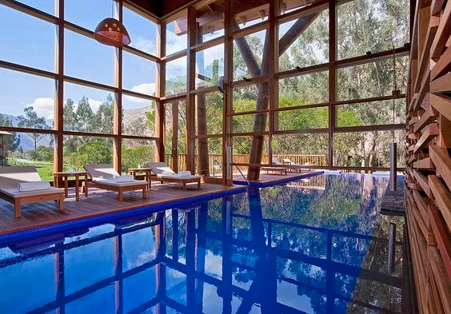
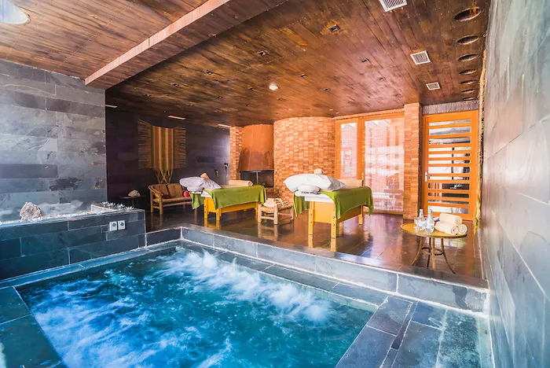
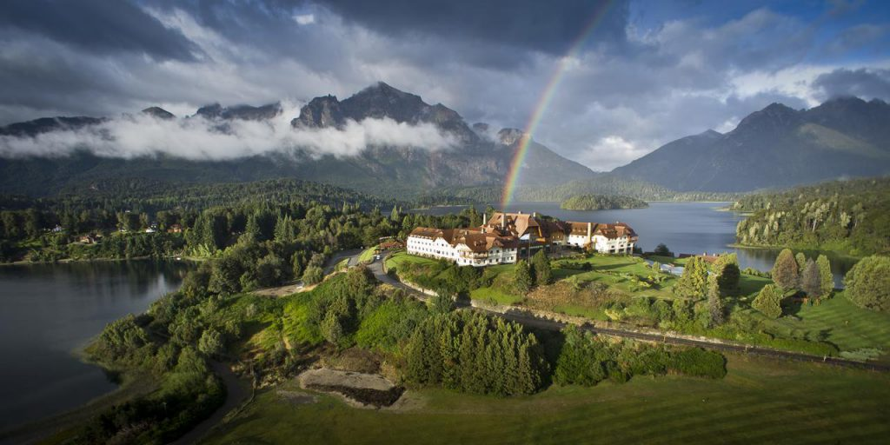

أفضل الفنادق في أمريكا الجنوبية

أفضل فندق فى بيرو
ذا كان لديك خطة لكى تقوم بزيارة الوادي المقدس فى مدينة الإنكا، فان فندق تامبو ديل إنكا سوف يوفر لك إقامة مريحة و استمتاع لا يصدق. ففي فندق تامبو ديل إنكا سوف تجد منتجع متكامل و نادى للسبا. و يتمتع فندق تامبو ديل إنكا بموقع لا مثيل له فهو يطل على احد الجبال التابعه لبيرو و على نهر أوروبامبا. و يضم فندق تامبو ديل إنكا حمامات رخامية رائعة، وشرفات مطلة على اروع المناظر، بالاضافة الى وجود نادى صحي و مطعم فاخر يقدم المأكولات اللذيذة الخاصة ببيرو
أفضل فندق فى تشيلي
يقع فندق ألتو أتاكاما بين سلسلة تلال تيرا كوتا و بين منحنيات وادي Catarbe أما داخل الفندق مميز حقاً حيث وسائد صوف الألبكة و الستائر الفريدة و المصنوعات من الحرف اليدوية و التي تدل جميعها على الاعتزاز بالثقافة المحلية كما أن الآثاث الخشبي معاد تدويره و هناك التزام جاد بزراعة النباتات المحلية كما يحتوي الفندق على ستة حمامات سباحة و منتجع صحي و اثنان وثلاثون غرفة كما أن ثمن الغرفة يتضمن وجبة الافطار.
افضل فندق فى الأرجنتين
يعد فندق و منتجع للاو للاو الراقي في غاية الفخامة و يوفر كل شيء بدءا من منتجع صحي على مستوى عالمي وصولا الى ملعب جولف رائع. يقع الفندق في باريلوشي و هو أفضل مكان للاستمتاع بالأنشطة في الهواء الطلق. في الشتاء، توفر جبال الأنديز أنشطة عديدة مثل التزلج على الجليد و في الصيف تدعوك مياه لاغو ناهويل هوابي الزرقاء للسباحة فيها. افتتح الفندق في عام 1938م و أصبح اسما يختاره المشاهير و السياسين من حول العالم عندما يريدون الاسترخاء و استكشاف بتاغونيا.
